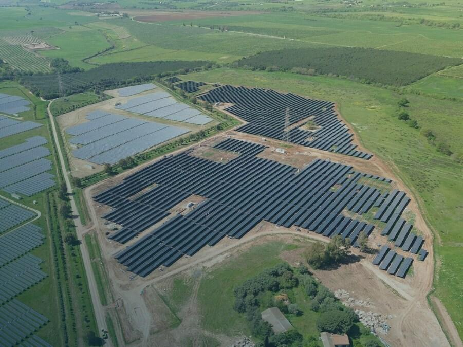

Renewable Energy
California, USA
Sierra Nevada Wind Infrastructure Assessment
Comprehensive EIA for a 200MW wind generator field, detailing migratory bird protection measures, soil retention plans, and acoustic dispersion grids.
LocationCalifornia
StatusApproved
ScopeFull EIA
Read Full Study